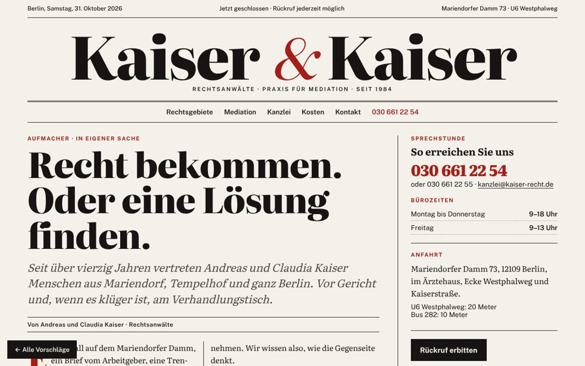

Vorschlag A
Zeitung
Die Startseite als Titelseite einer guten Tageszeitung: großer Zeitungskopf, Aufmacher mit Initiale, Rechtsgebiete als Ressorts, Mediation als Hintergrundstück.
- Wirkt gebildet, kompetent und berlinerisch
- Zeigt oben, ob die Kanzlei gerade geöffnet ist
- Viel Text, also ideal für Suchmaschinen